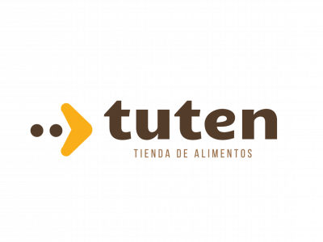
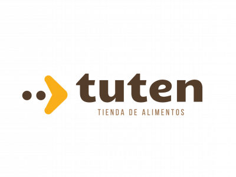

En constante búsqueda de nuevos desafíos profesionales, personales y de vida. Me considero una persona inquieta, proactiva y con facilidad para adquirir nuevas herramientas que aporten a mi formación. Formado en el área de la comunicación, devenido específicamente en medios digitales y redes sociales. Los últimos años me he dedicado a potenciar mis habilidades en Marketing Digital, más precisamente en el área de Paid Media y Desarrollo Web en WordPress. Soy un convencido que el mejor trabajo es el que se realiza en conjunto y el que se disfruta en cada una de las instancias que lo componen. Me apasiona viajar, practicar deportes y compartir momentos con familia y amigos. He impulsado mi carrera profesional en paralelo con la creación de mi agencia de Marketing Digital (Catorce Marketing), donde tuve el privilegio de trabajar para y con grandes marcas de diversos rubros.


 



Ver casos de éxito